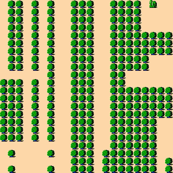
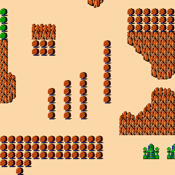

Zelda overlapping 3×3 visual checkpoint
Seed 0; wrapped source extraction; 20×20 placement grid; Context-sensitive weighting. Generated output boundaries are finite/nonperiodic.


| pattern frequency kl | 2.76824462947 |
|---|---|
| pattern edge frequency kl | inf |
| decoded tile frequency kl | 1.1958046177 |
| decoded tile edge frequency kl | 1.49414812675 |
Status: SAT · runtime: 175.440486614 s

| pattern frequency kl | 1.98745467026 |
|---|---|
| pattern edge frequency kl | inf |
| decoded tile frequency kl | 0.604193037571 |
| decoded tile edge frequency kl | 0.79938490224 |
Status: SAT · solve: 56.554766975 s · conflicts: 13 · decisions: 228 · observer backtracks: 13
WFC-as-SAT — Context — LEXICAL: TIMEOUT, no image.